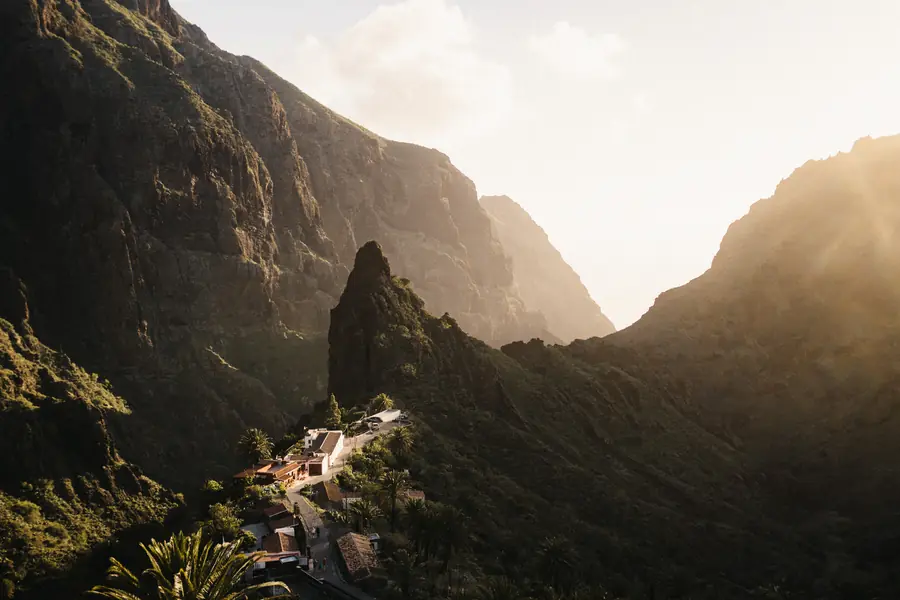
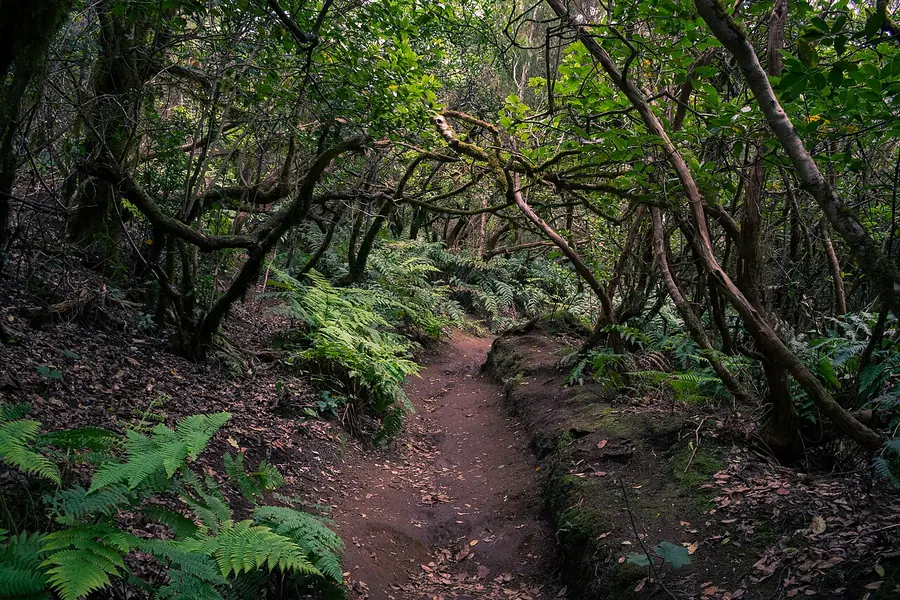
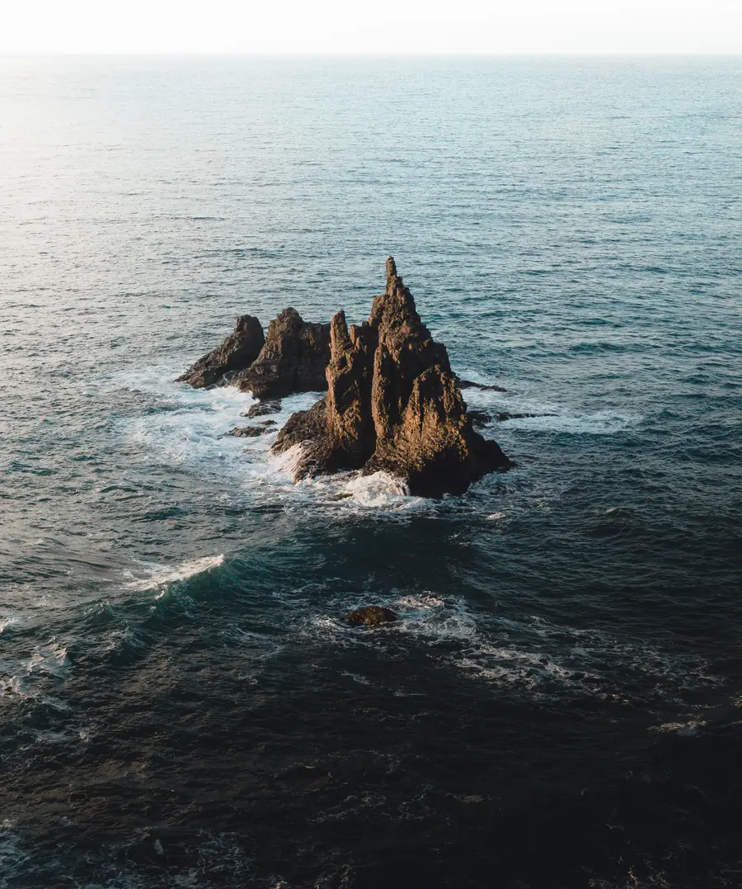
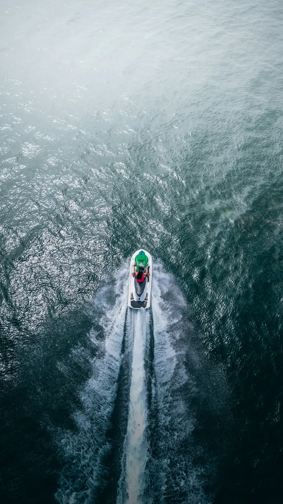
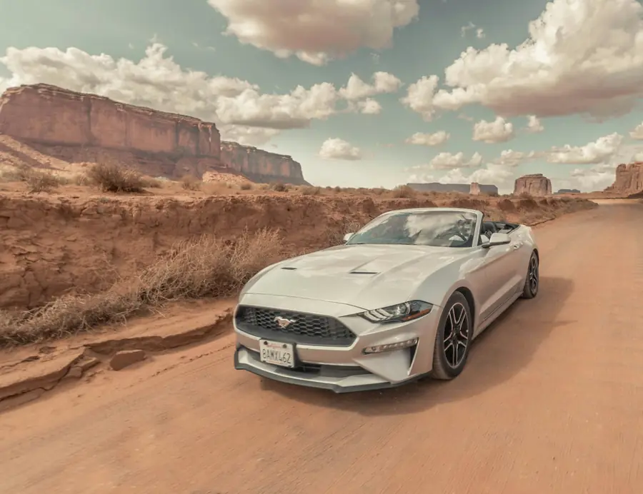

Автоэкскурсии
Тейде, Маска, Анага и побережье. Выберите маршрут индивидуальной поездки с остановками для прогулок и фото.
Индивидуальные экскурсии и впечатления на Тенерифе.
Выбрать поездкуТейде, Маска, Анага и побережье. Выберите маршрут индивидуальной поездки с остановками для прогулок и фото.
Яхта, JetSki, квадроциклы, авто или фотосессия. Откройте варианты и выберите занятие для своего дня.
Не знаете, с чего начать? Посмотрите все услуги или расскажите, какой отдых вам нравится. Подберём вариант вместе.
Тейде · вулканические пейзажи
Индивидуальная поездка к вулкану с остановками для прогулок и фотографий.
Побережье · день у океана
Автоэкскурсия по побережью: пляжи, скалы и остановки с видом на Атлантику.
Маска · горные дороги
Индивидуальная поездка по горным дорогам к деревне Маска и смотровым площадкам.
Атлантика · время у воды
Прогулка на яхте или поездка на JetSki. Формат, дату и условия обсуждаем с вами.
Индивидуальная автоэкскурсия к вулканическим пейзажам Тейде. Маршрут и остановки согласуем перед поездкой.
Подробнее
ЭкскурсииАвтоэкскурсия к деревне Маска и горным видам. Обсудим маршрут с учётом ваших интересов.
Подробнее
ЭкскурсииИндивидуальная поездка по северу Тенерифе: зелёные пейзажи, горные дороги и выбранные вместе остановки.
Подробнее
ЭкскурсииАвтоэкскурсия вдоль побережья. Подберём точки для прогулок, видов на океан и фотографий.
ПодробнееПосмотрите на остров с воды. Дату, программу, стоимость и условия прогулки уточним в переписке.
Подробнее
Иллюстративное фотоОкеанВпечатления на воде на гидроцикле. Доступные варианты и условия участия уточняются для вашей даты.
ПодробнееПоездка на квадроциклах в направлении Тейде. Маршрут, требования и наличие обсудим до бронирования.
Подробнее
Иллюстративное фотоЗа рулёмДля самостоятельных поездок по острову. Напишите даты. Уточним доступные автомобили и условия аренды.
ПодробнееПоездка по Тенерифе на Mustang. Маршрут, формат и доступную дату согласуем индивидуально.
ПодробнееСнимки на фоне Тенерифе. Обсудим локацию, дату и формат съёмки перед бронированием.
ПодробнееЦены и наличие уточняются для вашей даты.
Выберите услугу, укажите дату и количество гостей. Если дата пока неизвестна, напишите об этом в пожеланиях.
Обсудим маршрут, доступность, условия и итоговую стоимость до бронирования.
После согласования деталей отдельно уточним подтверждение и следующий шаг. Сам запрос в WhatsApp не является бронью.
Проводим индивидуальные автоэкскурсии и помогаем выбрать впечатления на острове. Поездки, знакомство с командой и отзывы гостей. В нашем Instagram.
Индивидуальные поездки и впечатления на Тенерифе. Программу, стоимость и условия обсуждаем до бронирования.
+34 607 020 014Instagram Direct